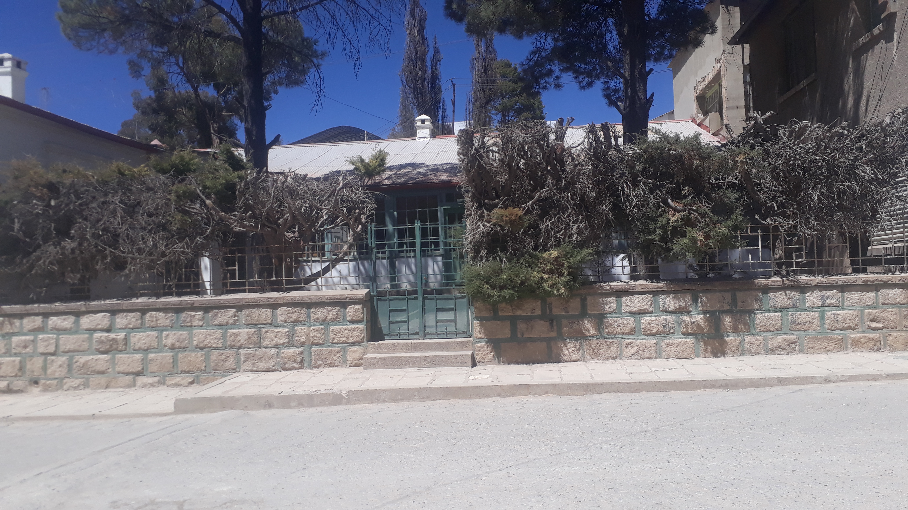
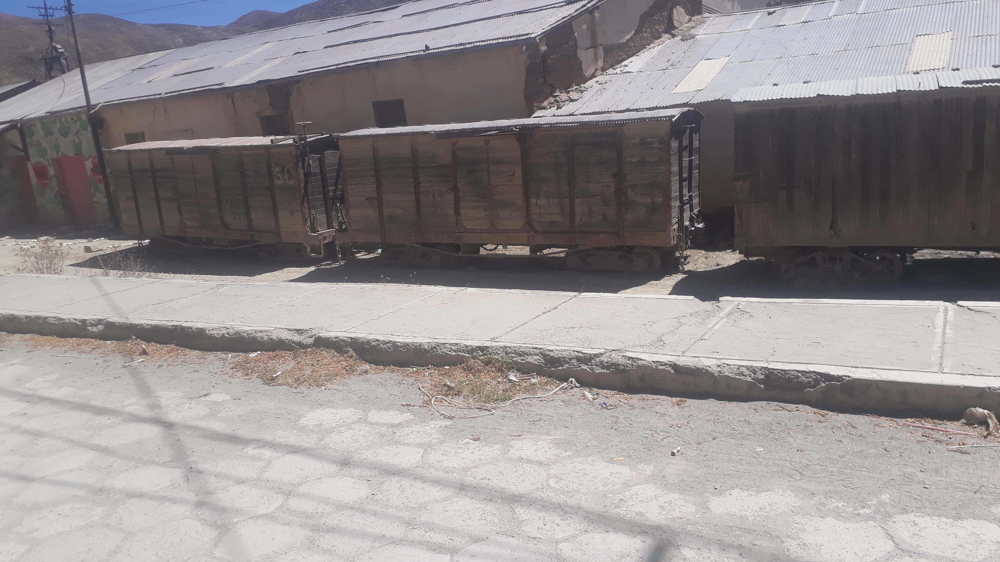

NUESTRA CULTURA
1HISTORIA DEL MASACRE MINERO
El 24 de junio de 1967, día de San Juan Bautista, bajo las órdenes del general René Barrientos, tropas del gobierno cometieron la mayor masacre de trabajadores en la historia de Bolivia, llamada la masacre de San Juan. Actualmente en Catavi se encuentra el Archivo histórico de Corporación Minera de Bolivia (COMIBOL). Las estimaciones de población (por cada año) se encuentra basadas de acuerdo a los censos oficiales. Muchos mineros de esta mina fueron dirigentes activos de la Federación Sindical de Trabajadores Mineros de Bolivia (FSTMB) y la Central Obrera Boliviana (COB)
 2EDIFICO DE ARCHIVOS HISTORICOS
Lourdes Peñaranda —bibliotecóloga y encargada del Archivo Histórico
Minero Regional Catavi— espera en la habitación que hace varias
décadas fue la sala principal, donde llaman la atención los zócalos y la
chimenea tallados en madera, además del machimbre reluciente. Esta
infraestructura fue construida aproximadamente en 1918 por la
Compañía Estañífera Llallagua, que entonces tenía capitales chilenos,
cuenta la anfitriona. “Pero en aquel tiempo no era como está ahora, sino
que ha sido remozada cuando Patiño compró la empresa”.
Así es. Con una maniobra que empezó en 1914 y terminó 10 años
después, Simón I. Patiño expulsó a los chilenos de la montaña de
Llallagua por razones de conveniencia económica y como una muestra
de soberanía nacional, señala el libro Un banco en la historia, escrito
por Roberto Querejazu Calvo.
Con la nacionalización de las minas (el 31 de octubre de 1952), las
propiedades del magnate del estaño pasaron al Estado para ser
administradas por la Comibol, entre ellas, la Casa Gerencia. El mayor
golpe ocurrió con el Decreto 21060 (del 29 de agosto de 1985), que
determinó el despido masivo de mineros. “Con esa política llegó el
abandono. Claro que seguía la Empresa Minera Catavi, pero no
producía ni explotaba estaño”, cuenta Peñaranda.
IMAGENES
Nuestra Historia
NUestros antepasados
Nuestro territorio
Nuestro futuro
INFORMATE DE LOS EDIFICIOS HISTORICOS
Durante ese tiempo, se acumularon montañas de papeles que eran depositados en patios, en cajas e incluso en turriles entremezclados con desechos, rememora la bibliotecóloga Carola Campos en un artículo publicado por el periódico La Época. Es entonces que, en 1999, un grupo de trabajadores del Almacén de la Comibol —dirigido por el líder sindical Edgar Ramírez— empezó a organizar aquellos documentos. Esta acción fue el inicio para el nacimiento del Archivo Histórico de la Minería Nacional, que resguarda documentación de La Paz, Oruro y Potosí, además de las localidades de Catavi, Pulacayo y Karachipampa.
Desde 2011, el Archivo Regional de Catavi recuperó desde cuadernos contables escritos a pulso hasta libros de registro de trabajadores. En ese trabajo se dieron cuenta también de que, en algunos casos, extrajeron información muy importante para beneficio propio; en otros, vendieron archivos para convertirlos en papel higiénico, cuenta Peñaranda. A pesar de todo ello, Bolivia custodia el más grande archivo minero del mundo, asegura Ramírez. De esa riqueza, al menos 2.000 metros lineales de documentos están repartidos en la Casa Gerencia, en habitaciones amplias que en antaño eran dormitorios lujosos y que ahora tienen los ventanales cubiertos con cartones para proteger las carpetas de los rayos solares.